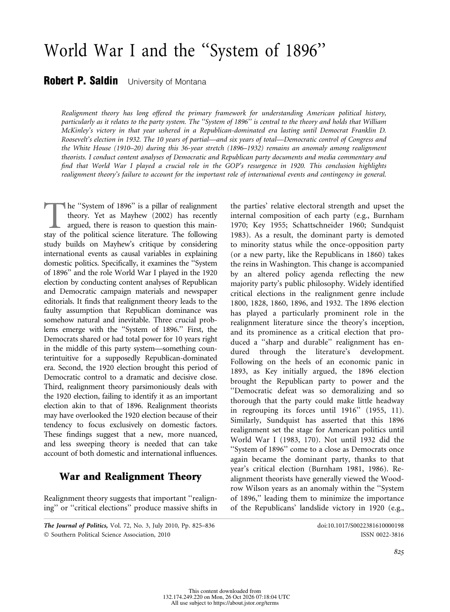
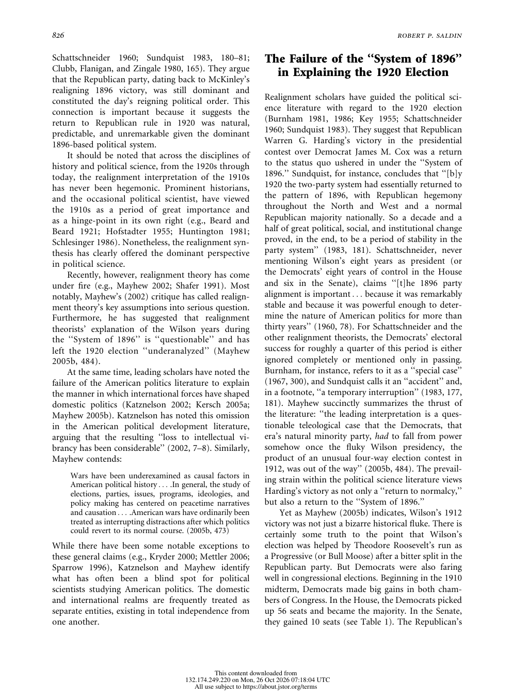

<!DOCTYPE html>
<html lang="en">
<head>
  <meta charset="UTF-8">
  <meta name="viewport" content="width=device-width, initial-scale=1.0">
  <meta name="description" content="World War I and the &#x27;System of 1896&#x27;. Scholarly Article A18.111 for Unit 5: Growing Pains.">
  <meta name="theme-color" content="#6D3E49">
  <title>Scholarly Article A18.111 | World War I and the &#x27;System of 1896&#x27;</title>
  <link rel="canonical" href="https://www.thegarzaarchive.org/APUSH/Unit_5/Sources/Scholarly_Articles/A18.111_World_War_I_System_1896.html">
  <link rel="preconnect" href="https://fonts.googleapis.com">
  <link rel="preconnect" href="https://fonts.gstatic.com" crossorigin>
  <link href="https://fonts.googleapis.com/css2?family=Cinzel:wght@500;600;700&amp;family=Cormorant+Garamond:ital,wght@0,500;0,600;0,700;1,500;1,600&amp;family=Inter:wght@500;600;700;800&amp;display=swap" rel="stylesheet">
  <style>
    :root {
      --forest: #6D3E49;
      --forest-mid: #975666;
      --coral: #17706A;
      --coral-light: #8BB8B4;
      --cream: #EAF6F4;
      --paper: #F9FCFC;
      --mint: #FAEFF2;
      --sage: #C5DBDA;
      --ink: #093430;
      --muted: #41625F;
      --shadow: 0 22px 55px rgba(65, 37, 44, .14);
      --heading: 'Cinzel', Georgia, serif;
      --body: 'Cormorant Garamond', Georgia, serif;
      --ui: Inter, Arial, sans-serif;
      --coral-text: #17706A;
    }

    * { box-sizing: border-box; }
    html { scroll-behavior: smooth; }
    body {
      margin: 0;
      min-width: 320px;
      background: var(--cream);
      color: var(--ink);
      font-family: var(--body);
      font-size: 19px;
      line-height: 1.65;
    }
    body::before {
      content: '';
      position: fixed;
      inset: 0;
      z-index: -1;
      background:
        radial-gradient(circle at 94% 4%, rgba(23, 112, 106, .12), transparent 25rem),
        linear-gradient(145deg, rgba(255,255,255,.55), transparent 48%);
      pointer-events: none;
    }
    a { color: inherit; }
    :focus-visible { outline: 3px solid var(--coral-light); outline-offset: 3px; }
    .skip-link {
      position: fixed;
      top: -5rem;
      left: 1rem;
      z-index: 1000;
      padding: .65rem 1rem;
      background: var(--paper);
      color: var(--forest);
      font: 700 .75rem var(--ui);
    }
    .skip-link:focus { top: 1rem; }

    .archive-bar {
      position: sticky;
      top: 0;
      z-index: 100;
      color: var(--paper);
      background: rgba(109, 62, 73, .98);
      border-bottom: 4px solid var(--coral);
      box-shadow: 0 4px 18px rgba(65, 37, 44, .18);
    }
    .archive-bar__inner {
      width: min(1120px, calc(100% - 2rem));
      min-height: 64px;
      margin: 0 auto;
      display: flex;
      align-items: center;
      justify-content: space-between;
      gap: 1.5rem;
    }
    .archive-link {
      display: inline-flex;
      align-items: center;
      gap: .7rem;
      color: var(--paper);
      font: 700 .72rem var(--ui);
      letter-spacing: .12em;
      text-decoration: none;
      text-transform: uppercase;
    }
    .archive-link span { color: var(--coral-light); font-size: 1.1rem; }
    .archive-link:hover { color: var(--coral-light); }
    .archive-meta {
      color: var(--sage);
      font: 700 .68rem var(--ui);
      letter-spacing: .12em;
      text-transform: uppercase;
    }
    .reading-progress {
      position: absolute;
      left: 0;
      bottom: -4px;
      width: 0;
      height: 4px;
      background: var(--coral-light);
      transform-origin: left center;
    }

    .document-shell {
      position: relative;
      width: min(940px, calc(100% - 2rem));
      margin: clamp(1.5rem, 4vw, 3.5rem) auto 4rem;
      overflow: hidden;
      background: var(--paper);
      border: 1px solid var(--sage);
      border-top: 7px solid var(--coral);
      box-shadow: var(--shadow);
    }
    .document-shell::before {
      content: attr(data-code);
      position: absolute;
      top: 2rem;
      right: 1.5rem;
      color: rgba(151, 86, 102, .055);
      font: 700 clamp(5rem, 15vw, 10rem)/.8 var(--heading);
      pointer-events: none;
    }
    .legacy-source {
      width: 100% !important;
      max-width: none !important;
      margin: 0 !important;
      background: transparent !important;
      border-collapse: collapse;
    }
    .source-content {
      position: relative;
      padding: clamp(2.25rem, 7vw, 5rem) !important;
    }
    .source-kicker {
      position: relative;
      margin: 0 0 1rem !important;
      color: var(--coral-text) !important;
      font: 800 .7rem var(--ui) !important;
      letter-spacing: .18em !important;
    }
    .source-title {
      position: relative;
      max-width: 760px;
      margin: 0 0 1rem !important;
      color: var(--forest) !important;
      font: 600 clamp(2.35rem, 6vw, 4.45rem)/1.04 var(--heading) !important;
      letter-spacing: -.025em;
      text-wrap: balance;
    }
    .source-byline {
      position: relative;
      max-width: 720px;
      margin: 0 0 2.1rem !important;
      color: var(--forest-mid) !important;
      font: 600 clamp(1rem, 2vw, 1.15rem)/1.55 var(--body) !important;
      font-style: italic !important;
    }
    .title-rule {
      margin: 0 0 2rem !important;
    }
    .title-rule td { border-top: 1px solid var(--coral) !important; }

    .context-grid {
      margin: 0 0 3rem !important;
      overflow: hidden;
      background: var(--mint) !important;
      border: 1px solid var(--sage);
      border-left: 5px solid var(--coral);
    }
    .context-grid td:first-child {
      width: 23% !important;
      padding: 1rem 1rem .75rem 1.2rem !important;
      color: var(--coral-text) !important;
      font: 800 .65rem var(--ui) !important;
      letter-spacing: .14em !important;
    }
    .context-grid td:last-child {
      padding: 1rem 1.25rem .75rem .75rem !important;
      color: var(--ink) !important;
      font: 600 .86rem/1.65 var(--ui) !important;
    }
    .context-grid tr + tr td { border-top: 1px solid var(--sage); }

    .section-heading {
      display: block !important;
      width: fit-content;
      margin: 3.6rem 0 1.4rem !important;
      padding: .45rem 0 .55rem !important;
      color: var(--forest) !important;
      border-top: 4px solid var(--coral);
      border-bottom: 1px solid var(--sage) !important;
      font: 700 clamp(1rem, 2vw, 1.25rem) var(--heading) !important;
      letter-spacing: .04em;
    }
    .section-spacer { height: 0 !important; }
    .citation-label {
      max-width: 67ch;
      margin: 1.3rem auto .4rem !important;
      color: var(--coral-text) !important;
      font: 800 .7rem var(--ui) !important;
      letter-spacing: .08em;
      text-transform: uppercase;
    }
    .document-subheading {
      max-width: 67ch;
      margin: 1.8rem auto .65rem !important;
      color: var(--forest-mid) !important;
      font: 700 .84rem/1.5 var(--ui) !important;
      letter-spacing: .035em;
    }
    .legacy-source p {
      max-width: 67ch;
      margin: 0 auto 1.05em !important;
      color: var(--ink) !important;
      font: 500 clamp(1.08rem, 1.8vw, 1.22rem)/1.78 var(--body) !important;
    }
    .legacy-source p a {
      color: var(--forest-mid) !important;
      text-decoration-color: var(--coral-light) !important;
      text-underline-offset: .18em;
      word-break: break-word !important;
    }
    .legacy-source p a:hover { color: var(--coral-text) !important; }

    .editorial-note {
      max-width: 67ch;
      margin: 1.4rem auto 2.5rem !important;
      background: var(--mint) !important;
      border: 1px solid var(--sage);
    }
    .editorial-note td {
      padding: 1rem 1.2rem !important;
      color: var(--forest-mid) !important;
      border-left: 4px solid var(--coral) !important;
      font: 600 .79rem/1.65 var(--ui) !important;
    }
    .source-media {
      max-width: 67ch;
      margin: 1.25rem auto 2.5rem !important;
      background: var(--mint) !important;
      border: 1px solid var(--sage);
    }
    .source-media td { padding: 1rem !important; }
    .source-media img {
      display: block;
      width: auto !important;
      max-width: 100% !important;
      height: auto !important;
      margin: 0 auto;
    }
    .source-media td[style*="font-family"] {
      color: var(--muted) !important;
      font: 600 .72rem/1.55 var(--ui) !important;
    }
    .source-footer { padding: 0 clamp(2.25rem, 7vw, 5rem) 2rem !important; }
    .source-imprint { margin-top: 1rem !important; }
    .source-imprint td {
      padding-top: 1rem !important;
      color: var(--muted) !important;
      border-top: 1px solid var(--sage) !important;
      font: 700 .63rem var(--ui) !important;
      letter-spacing: .12em !important;
    }
    .document-actions {
      width: min(940px, calc(100% - 2rem));
      margin: -2rem auto 4rem;
      display: flex;
      justify-content: center;
    }
    .document-actions a {
      display: inline-flex;
      align-items: center;
      gap: .65rem;
      padding: .8rem 1.1rem;
      color: var(--forest);
      border: 1px solid var(--sage);
      background: var(--paper);
      font: 800 .68rem var(--ui);
      letter-spacing: .12em;
      text-decoration: none;
      text-transform: uppercase;
    }
    .document-actions a:hover { border-color: var(--coral); color: var(--coral-text); }

    @media (max-width: 680px) {
      .archive-bar__inner { min-height: 58px; }
      .archive-meta { display: none; }
      .document-shell { width: calc(100% - 1rem); margin-top: .75rem; }
      .source-content { padding: 2rem 1.25rem !important; }
      .document-shell::before { top: 1.2rem; right: .35rem; }
      .source-title { font-size: clamp(2rem, 10vw, 2.85rem) !important; }
      .context-grid tr, .context-grid td { display: block; width: 100% !important; }
      .context-grid td:first-child { padding-bottom: .25rem !important; }
      .context-grid td:last-child { padding: 0 1.2rem 1rem !important; }
      .context-grid tr + tr td:last-child { border-top: 0; }
      .source-footer { padding: 0 1.25rem 1.5rem !important; }
      .document-actions { margin-top: -2.4rem; }
    }

    @media print {
      @page { margin: .65in; }
      body { background: #fff; font-size: 11pt; }
      body::before, .archive-bar, .skip-link, .document-actions, .document-shell::before { display: none !important; }
      .document-shell { width: 100%; margin: 0; border: 0; box-shadow: none; }
      .source-content { padding: 0 !important; }
      .legacy-source p { max-width: none; font-size: 11pt !important; line-height: 1.5 !important; }
      .context-grid, .editorial-note { break-inside: avoid; }
      .source-footer { padding: 1rem 0 0 !important; }
    }

    @media (prefers-reduced-motion: reduce) {
      html { scroll-behavior: auto; }
    }

  
    .source-table { max-width: 67ch; margin: 0 auto 1.05em; border-collapse: collapse; font: 500 1.1rem/1.6 var(--body); color: var(--ink); }
    .source-table td { padding: .2rem .9rem .2rem 0; border-bottom: 1px dotted var(--sage); }
    .source-table td:last-child { text-align: right; }
    .legacy-source blockquote {
      max-width: 62ch; margin: 0 auto 1.2em !important; padding: .9rem 1.2rem;
      background: var(--mint); border-left: 4px solid var(--coral);
    }
    .legacy-source blockquote p { max-width: none; margin: 0 0 .6em !important; }
    .legacy-source blockquote p:last-child { margin-bottom: 0 !important; }
    .page-text { max-width: 67ch; margin: -1rem auto 2.2rem; border: 1px solid var(--sage); background: var(--paper); }
    .page-text summary { cursor: pointer; padding: .7rem 1rem; color: var(--forest-mid); font: 700 .72rem var(--ui); letter-spacing: .06em; text-transform: uppercase; }
    .page-text[open] summary { border-bottom: 1px solid var(--sage); }
    .page-text p { margin: .9rem 1.1rem !important; font: 500 1rem/1.6 var(--body) !important; white-space: pre-line; }
    .legacy-source sup { font: 700 .68em var(--ui); line-height: 0; }
  </style>
</head>
<body id="top">
  <a class="skip-link" href="#document">Skip to document</a>
  <nav class="archive-bar" aria-label="Scholarly Article navigation">
    <div class="archive-bar__inner">
      <a class="archive-link" href="https://www.thegarzaarchive.org/APUSH/Unit_5/Sources/Scholarly_Articles/"><span aria-hidden="true">←</span> Scholarly Article Archive</a>
      <div class="archive-meta">Unit 5 · Chapter 18 · A18.111</div>
    </div>
    <div class="reading-progress" id="reading-progress" aria-hidden="true"></div>
  </nav>
  <main class="document-shell" id="document" data-code="A18.111">
    <article aria-labelledby="source-title">
<table role="presentation" width="100%" cellpadding="0" cellspacing="0" border="0" style="background-color:#EAF6F4; max-width:820px; margin:0 auto;" class="legacy-source">
  <tr><td style="padding:32px 36px 20px 36px;" class="source-content">
<div style="font-family:Arial, Helvetica, sans-serif; color:#17706A; font-size:13px; font-weight:700; letter-spacing:0.5px; text-transform:uppercase; margin-bottom:8px;" class="source-kicker">Scholarly Article A18.111</div>
<div style="font-family:Georgia, 'Times New Roman', serif; color:#0D4A44; font-size:30px; font-weight:700; line-height:1.2; margin-bottom:8px;" class="source-title" id="source-title" role="heading" aria-level="1">World War I and the 'System of 1896'</div>
<div style="font-family:Arial, Helvetica, sans-serif; color:#17706A; font-size:14px; font-weight:700; line-height:1.5; margin-bottom:16px;" class="source-byline">Robert P. Saldin</div>
<table role="presentation" width="100%" cellpadding="0" cellspacing="0" border="0" style="margin-bottom:20px;" class="title-rule"><tr><td style="border-top:4px solid #C97288; font-size:1px; line-height:1px;">&nbsp;</td></tr></table>
<table role="presentation" width="100%" cellpadding="0" cellspacing="0" border="0" style="background-color:#E7B0BE; border-collapse:collapse; margin-bottom:26px;" class="context-grid">
  <tr>
    <td valign="top" style="width:22%; padding:12px 12px 8px 14px; font-family:Arial, Helvetica, sans-serif; color:#0D4A44; font-size:12px; font-weight:700; letter-spacing:1px; text-transform:uppercase;">ARTICLE</td>
    <td valign="top" style="padding:12px 14px 8px 12px; font-family:Arial, Helvetica, sans-serif; color:#0D4A44; font-size:13.5px; line-height:1.55;">World War I and the 'System of 1896'</td>
  </tr>
  <tr>
    <td valign="top" style="width:22%; padding:8px 12px 8px 14px; font-family:Arial, Helvetica, sans-serif; color:#0D4A44; font-size:12px; font-weight:700; letter-spacing:1px; text-transform:uppercase;">JOURNAL</td>
    <td valign="top" style="padding:8px 14px 8px 12px; font-family:Arial, Helvetica, sans-serif; color:#0D4A44; font-size:13.5px; line-height:1.55;">The Journal of Politics 72, no. 3 (2010)</td>
  </tr>
  <tr>
    <td valign="top" style="width:22%; padding:8px 12px 8px 14px; font-family:Arial, Helvetica, sans-serif; color:#0D4A44; font-size:12px; font-weight:700; letter-spacing:1px; text-transform:uppercase;">EXCERPT</td>
    <td valign="top" style="padding:8px 14px 8px 12px; font-family:Arial, Helvetica, sans-serif; color:#0D4A44; font-size:13.5px; line-height:1.55;">Original journal pages 825-826</td>
  </tr>
  <tr>
    <td valign="top" style="width:22%; padding:8px 12px 8px 14px; font-family:Arial, Helvetica, sans-serif; color:#0D4A44; font-size:12px; font-weight:700; letter-spacing:1px; text-transform:uppercase;">JSTOR</td>
    <td valign="top" style="padding:8px 14px 8px 12px; font-family:Arial, Helvetica, sans-serif; color:#0D4A44; font-size:13.5px; line-height:1.55;">https://www.jstor.org/stable/10.1017/s0022381610000198</td>
  </tr>
  <tr>
    <td valign="top" style="width:22%; padding:8px 12px 8px 14px; font-family:Arial, Helvetica, sans-serif; color:#0D4A44; font-size:12px; font-weight:700; letter-spacing:1px; text-transform:uppercase;">ESSAY PROMPTS</td>
    <td valign="top" style="padding:8px 14px 8px 12px; font-family:Arial, Helvetica, sans-serif; color:#0D4A44; font-size:13.5px; line-height:1.55;">18.7</td>
  </tr>
  <tr>
    <td valign="top" style="width:22%; padding:8px 12px 12px 14px; font-family:Arial, Helvetica, sans-serif; color:#0D4A44; font-size:12px; font-weight:700; letter-spacing:1px; text-transform:uppercase;">ARGUMENT ROLES</td>
    <td valign="top" style="padding:8px 14px 12px 12px; font-family:Arial, Helvetica, sans-serif; color:#0D4A44; font-size:13.5px; line-height:1.55;">18.7.1 Counters</td>
  </tr>
</table>
<div style="display:inline-block; font-family:Arial, Helvetica, sans-serif; color:#17706A; font-size:17px; font-weight:700; border-bottom:2px solid #C97288; padding-bottom:4px; margin:6px 0 14px 0;" class="section-heading" role="heading" aria-level="2">Selection Overview</div>
<p style="font-family:Georgia, 'Times New Roman', serif; color:#0D4A44; font-size:15px; line-height:1.7; margin:0 0 14px 0; ">Saldin questions the realignment view that McKinley's 1896 victory opened a Republican era lasting until 1932. Using content analysis of party documents and editorials, he argues that World War I drove the Republican resurgence of 1920 and that a decade of Democratic power in the 1910s shows how realignment theory overlooks international events and contingency.</p>
<div style="display:inline-block; font-family:Arial, Helvetica, sans-serif; color:#17706A; font-size:17px; font-weight:700; border-bottom:2px solid #C97288; padding-bottom:4px; margin:6px 0 14px 0;" class="section-heading" role="heading" aria-level="2">Excerpt Format</div>
<p style="font-family:Georgia, 'Times New Roman', serif; color:#0D4A44; font-size:15px; line-height:1.7; margin:0 0 14px 0; ">The next two pages are exact facsimiles from the supplied article PDF. Original pagination and the author's note system are preserved.</p>
<div style="display:inline-block; font-family:Arial, Helvetica, sans-serif; color:#17706A; font-size:17px; font-weight:700; border-bottom:2px solid #C97288; padding-bottom:4px; margin:6px 0 14px 0;" class="section-heading" role="heading" aria-level="2">Facsimile Excerpt</div>
<table role="presentation" width="100%" cellpadding="0" cellspacing="0" border="0" style="margin:6px 0 24px 0;" class="source-media"><tr>
  <td style="text-align:center; padding:14px; background-color:#FFFFFF; border:1px solid #E7B0BE;">
    
    <div style="font-family:Arial, Helvetica, sans-serif; color:#0D4A44; font-size:12.5px; line-height:1.55; margin-top:10px; text-align:left;">Original journal page 825.</div>
  </td>
</tr></table>
<details class="page-text"><summary>Text of this page (original journal page 825)</summary>
<p>World War I and the ‘‘System of 1896’’
Robert P. Saldin
University of Montana
Realignment theory has long offered the primary framework for understanding American political history,
particularly as it relates to the party system. The ‘‘System of 1896’’ is central to the theory and holds that William
McKinley’s victory in that year ushered in a Republican-dominated era lasting until Democrat Franklin D.
Roosevelt’s election in 1932. The 10 years of partial—and six years of total—Democratic control of Congress and
the White House (1910–20) during this 36-year stretch (1896–1932) remains an anomaly among realignment
theorists. I conduct content analyses of Democratic and Republican party documents and media commentary and
find that World War I played a crucial role in the GOP’s resurgence in 1920. This conclusion highlights
realignment theory’s failure to account for the important role of international events and contingency in general.
T
he ‘‘System of 1896’’ is a pillar of realignment
theory. Yet as Mayhew (2002) has recently
argued, there is reason to question this main-
stay of the political science literature. The following
study builds on Mayhew’s critique by considering
international events as causal variables in explaining
domestic politics. Specifically, it examines the ‘‘System
of 1896’’ and the role World War I played in the 1920
election by conducting content analyses of Republican
and Democratic campaign materials and newspaper
editorials. It finds that realignment theory leads to the
faulty assumption that Republican dominance was
somehow natural and inevitable. Three crucial prob-
lems emerge with the ‘‘System of 1896.’’ First, the
Democrats shared or had total power for 10 years right
in the middle of this party system—something coun-
terintuitive for a supposedly Republican-dominated
era. Second, the 1920 election brought this period of
Democratic control to a dramatic and decisive close.
Third, realignment theory parsimoniously deals with
the 1920 election, failing to identify it as an important
election akin to that of 1896. Realignment theorists
may have overlooked the 1920 election because of their
tendency to focus exclusively on domestic factors.
These findings suggest that a new, more nuanced,
and less sweeping theory is needed that can take
account of both domestic and international influences.
War and Realignment Theory
Realignment theory suggests that important ‘‘realign-
ing’’ or ‘‘critical elections’’ produce massive shifts in
the parties’ relative electoral strength and upset the
internal composition of each party (e.g., Burnham
1970; Key 1955; Schattschneider 1960; Sundquist
1983). As a result, the dominant party is demoted
to minority status while the once-opposition party
(or a new party, like the Republicans in 1860) takes
the reins in Washington. This change is accompanied
by an altered policy agenda reflecting the new
majority party’s public philosophy. Widely identified
critical elections in the realignment genre include
1800, 1828, 1860, 1896, and 1932. The 1896 election
has played a particularly prominent role in the
realignment literature since the theory’s inception,
and its prominence as a critical election that pro-
duced a ‘‘sharp and durable’’ realignment has en-
dured
through
the
literature’s
development.
Following on the heels of an economic panic in
1893, as Key initially argued, the 1896 election
brought the Republican party to power and the
‘‘Democratic defeat was so demoralizing and so
thorough that the party could make little headway
in regrouping its forces until 1916’’ (1955, 11).
Similarly, Sundquist has asserted that this 1896
realignment set the stage for American politics until
World War I (1983, 170). Not until 1932 did the
‘‘System of 1896’’ come to a close as Democrats once
again became the dominant party, thanks to that
year’s critical election (Burnham 1981, 1986). Re-
alignment theorists have generally viewed the Wood-
row Wilson years as an anomaly within the ‘‘System
of 1896,’’ leading them to minimize the importance
of the Republicans’ landslide victory in 1920 (e.g.,
The Journal of Politics, Vol. 72, No. 3, July 2010, Pp. 825–836
doi:10.1017/S0022381610000198
 Southern Political Science Association, 2010
ISSN 0022-3816
825
This content downloaded from 
132.174.249.220 on Mon, 26 Oct 2026 07:18:04 UTC 
All use subject to https://about.jstor.org/terms</p></details>
<table role="presentation" width="100%" cellpadding="0" cellspacing="0" border="0" style="margin:6px 0 24px 0;" class="source-media"><tr>
  <td style="text-align:center; padding:14px; background-color:#FFFFFF; border:1px solid #E7B0BE;">
    
    <div style="font-family:Arial, Helvetica, sans-serif; color:#0D4A44; font-size:12.5px; line-height:1.55; margin-top:10px; text-align:left;">Original journal page 826.</div>
  </td>
</tr></table>
<details class="page-text"><summary>Text of this page (original journal page 826)</summary>
<p>Schattschneider
1960;
Sundquist
1983,
180–81;
Clubb, Flanigan, and Zingale 1980, 165). They argue
that the Republican party, dating back to McKinley’s
realigning 1896 victory, was still dominant and
constituted the day’s reigning political order. This
connection is important because it suggests the
return to Republican rule in 1920 was natural,
predictable, and unremarkable given the dominant
1896-based political system.
It should be noted that across the disciplines of
history and political science, from the 1920s through
today, the realignment interpretation of the 1910s
has never been hegemonic. Prominent historians,
and the occasional political scientist, have viewed
the 1910s as a period of great importance and
as a hinge-point in its own right (e.g., Beard and
Beard 1921; Hofstadter 1955; Huntington 1981;
Schlesinger 1986). Nonetheless, the realignment syn-
thesis has clearly offered the dominant perspective
in political science.
Recently, however, realignment theory has come
under fire (e.g., Mayhew 2002; Shafer 1991). Most
notably, Mayhew’s (2002) critique has called realign-
ment theory’s key assumptions into serious question.
Furthermore, he has suggested that realignment
theorists’ explanation of the Wilson years during
the ‘‘System of 1896’’ is ‘‘questionable’’ and has
left the 1920 election ‘‘underanalyzed’’ (Mayhew
2005b, 484).
At the same time, leading scholars have noted the
failure of the American politics literature to explain
the manner in which international forces have shaped
domestic politics (Katznelson 2002; Kersch 2005a;
Mayhew 2005b). Katznelson has noted this omission
in the American political development literature,
arguing that the resulting ‘‘loss to intellectual vi-
brancy has been considerable’’ (2002, 7–8). Similarly,
Mayhew contends:
Wars have been underexamined as causal factors in
American political history . . . .In general, the study of
elections, parties, issues, programs, ideologies, and
policy making has centered on peacetime narratives
and causation . . . .American wars have ordinarily been
treated as interrupting distractions after which politics
could revert to its normal course. (2005b, 473)
While there have been some notable exceptions to
these general claims (e.g., Kryder 2000; Mettler 2006;
Sparrow 1996), Katznelson and Mayhew identify
what has often been a blind spot for political
scientists studying American politics. The domestic
and international realms are frequently treated as
separate entities, existing in total independence from
one another.
The Failure of the ‘‘System of 1896’’
in Explaining the 1920 Election
Realignment scholars have guided the political sci-
ence literature with regard to the 1920 election
(Burnham 1981, 1986; Key 1955; Schattschneider
1960; Sundquist 1983). They suggest that Republican
Warren G. Harding’s victory in the presidential
contest over Democrat James M. Cox was a return
to the status quo ushered in under the ‘‘System of
1896.’’ Sundquist, for instance, concludes that ‘‘[b]y
1920 the two-party system had essentially returned to
the pattern of 1896, with Republican hegemony
throughout the North and West and a normal
Republican majority nationally. So a decade and a
half of great political, social, and institutional change
proved, in the end, to be a period of stability in the
party system’’ (1983, 181). Schattschneider, never
mentioning Wilson’s eight years as president (or
the Democrats’ eight years of control in the House
and six in the Senate), claims ‘‘[t]he 1896 party
alignment is important . . . because it was remarkably
stable and because it was powerful enough to deter-
mine the nature of American politics for more than
thirty years’’ (1960, 78). For Schattschneider and the
other realignment theorists, the Democrats’ electoral
success for roughly a quarter of this period is either
ignored completely or mentioned only in passing.
Burnham, for instance, refers to it as a ‘‘special case’’
(1967, 300), and Sundquist calls it an ‘‘accident’’ and,
in a footnote, ‘‘a temporary interruption’’ (1983, 177,
181). Mayhew succinctly summarizes the thrust of
the literature: ‘‘the leading interpretation is a ques-
tionable teleological case that the Democrats, that
era’s natural minority party, had to fall from power
somehow once the fluky Wilson presidency, the
product of an unusual four-way election contest in
1912, was out of the way’’ (2005b, 484). The prevail-
ing strain within the political science literature views
Harding’s victory as not only a ‘‘return to normalcy,’’
but also a return to the ‘‘System of 1896.’’
Yet as Mayhew (2005b) indicates, Wilson’s 1912
victory was not just a bizarre historical fluke. There is
certainly some truth to the point that Wilson’s
election was helped by Theodore Roosevelt’s run as
a Progressive (or Bull Moose) after a bitter split in the
Republican party. But Democrats were also faring
well in congressional elections. Beginning in the 1910
midterm, Democrats made big gains in both cham-
bers of Congress. In the House, the Democrats picked
up 56 seats and became the majority. In the Senate,
they gained 10 seats (see Table 1). The Republican’s
826
robert p. saldin
This content downloaded from 
132.174.249.220 on Mon, 26 Oct 2026 07:18:04 UTC 
All use subject to https://about.jstor.org/terms</p></details>
<div style="display:inline-block; font-family:Arial, Helvetica, sans-serif; color:#17706A; font-size:17px; font-weight:700; border-bottom:2px solid #C97288; padding-bottom:4px; margin:6px 0 14px 0;" class="section-heading" role="heading" aria-level="2">Chicago Citations</div>
<div style="font-family:Arial, Helvetica, sans-serif; color:#17706A; font-size:13px; font-weight:700; margin:4px 0 6px 0;" class="citation-label">Bibliography entry:</div>
<p style="font-family:Georgia, 'Times New Roman', serif; color:#0D4A44; font-size:15px; line-height:1.7; margin:0 0 14px 0; padding-left:36px; text-indent:-36px;">Saldin, Robert P. “World War I and the 'System of 1896'.” <em>The Journal of Politics</em> 72, no. 3 (2010): 825–836. https://www.jstor.org/stable/10.1017/s0022381610000198.</p>
<div style="font-family:Arial, Helvetica, sans-serif; color:#17706A; font-size:13px; font-weight:700; margin:4px 0 6px 0;" class="citation-label">Footnote citation:</div>
<p style="font-family:Georgia, 'Times New Roman', serif; color:#0D4A44; font-size:15px; line-height:1.7; margin:0 0 14px 0; ">Robert P. Saldin, “World War I and the 'System of 1896',” <em>The Journal of Politics</em> 72, no. 3 (2010): 825–826, https://www.jstor.org/stable/10.1017/s0022381610000198.</p>
<div style="font-family:Arial, Helvetica, sans-serif; color:#17706A; font-size:13px; font-weight:700; margin:4px 0 6px 0;" class="citation-label">Shortened citation:</div>
<p style="font-family:Georgia, 'Times New Roman', serif; color:#0D4A44; font-size:15px; line-height:1.7; margin:0 0 14px 0; ">Saldin, “World War I,” 825–826.</p>
<div style="display:inline-block; font-family:Arial, Helvetica, sans-serif; color:#17706A; font-size:17px; font-weight:700; border-bottom:2px solid #C97288; padding-bottom:4px; margin:6px 0 14px 0;" class="section-heading" role="heading" aria-level="2">Source Verification</div>
<p style="font-family:Georgia, 'Times New Roman', serif; color:#0D4A44; font-size:15px; line-height:1.7; margin:0 0 14px 0; ">Supplied PDF pages 2-3 correspond to original journal pages 825-826. The pages were inserted directly from the supplied PDF; no transcription or silent omission was introduced.</p>
  </td></tr>
  <tr><td style="padding:0 36px 22px 36px;" class="source-footer">
<table role="presentation" width="100%" cellpadding="0" cellspacing="0" border="0" style="margin-top:10px;" class="source-imprint"><tr>
  <td style="padding-top:12px; border-top:1px solid #C97288; font-family:Arial, Helvetica, sans-serif; color:#17706A; font-size:11px; letter-spacing:1px; text-transform:uppercase; text-align:center;">UNIT 5 · GROWING PAINS | HISTORY C1002 | DANIEL GARZA, M.A.</td>
</tr></table>
  </td></tr>
</table>

    </article>
  </main>
  <div class="document-actions">
    <a href="https://www.thegarzaarchive.org/APUSH/Unit_5/Sources/Scholarly_Articles/"><span aria-hidden="true">←</span> Return to the Scholarly Article Archive</a>
  </div>
  <script>
    (() => {
      const progress = document.getElementById('reading-progress');
      const updateProgress = () => {
        const scrollable = document.documentElement.scrollHeight - window.innerHeight;
        const percent = scrollable > 0 ? Math.min(100, Math.max(0, window.scrollY / scrollable * 100)) : 0;
        progress.style.width = `${percent}%`;
      };
      updateProgress();
      window.addEventListener('scroll', updateProgress, { passive: true });
      window.addEventListener('resize', updateProgress);
    })();
  </script>
</body>
</html>
